or disjoint와 zext 재결합을 일반화하기
전용 XOR fold로 시작한 수정을 기존 reassociation helper에 통합하고 nneg 보존 조건을 검토한다.
LLVM_InstCombine_or_disjoint_zext_.pdf의 전체 내용입니다. 설명·코드·표·검증 기록을 생략하지 않고 옮겼습니다. 그림 안의 문자 인식 결과에는 기호 오류가 있을 수 있어 이미지도 함께 제공합니다.
이 문서의 목차
LLVM InstCombine 기여기 / or disjoint와 zext 재결합 / 하나의 missed fold가 일반화된 reassociation으로 발전하기까지
LLVM InstCombine 기여기
or disjoint와 zext 재결합
하나의 missed fold가 일반화된 reassociation으로 발전하기까지
조영진 · hunterhhunter | LLVM PR #214970
1
페이지 배치·기호·도식 확인하기

이 패턴을 읽기 위한 세 가지 배경 / InstCombine / 핵심 관찰
이 패턴을 읽기 위한 세 가지 배경
InstCombine LLVM IR을 target-independent하게 단순화하고 canonical form으로 만든다.
zext 좁은 정수의 상위 비트를 0으로 채워 더 넓은 정수형으로 확장한다.
or disjoint 두 피연산자의 같은 비트가 동시에 1이 아님을 명시한다. 이 약속을 어기면 결과는 poison이다.
핵심 관찰
defined input에서는
X | C = X ^ C
따라서 OR 상수를 바깥 XOR 상수로 이동할 수 있다.
2
페이지 배치·기호·도식 확인하기

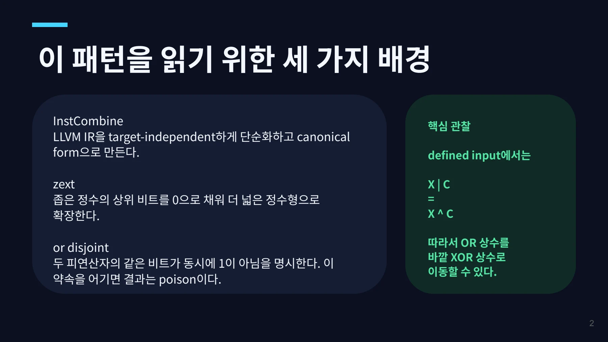
3개 명령어를 2개로 줄일 수 있었다 / LLVM issue #214652에서 InstCombine이 아래 IR을 그대로 남기는 사례를 확인했다. / 현재 출력 기대 출력
3개 명령어를 2개로 줄일 수 있었다
LLVM issue #214652에서 InstCombine이 아래 IR을 그대로 남기는 사례를 확인했다.
현재 출력
%or = or disjoint i8 %x,
2
%z = zext i8 %or to i32
%r = xor i32 %z, 257기대 출력
%z = zext i8 %x to i32→
%r = xor i32 %z, 259259 = 257 ^ zext(2)중간의 narrow or가 사라져 IR simplification과 canonicalization이 개선된다. 3
페이지 배치·기호·도식 확인하기

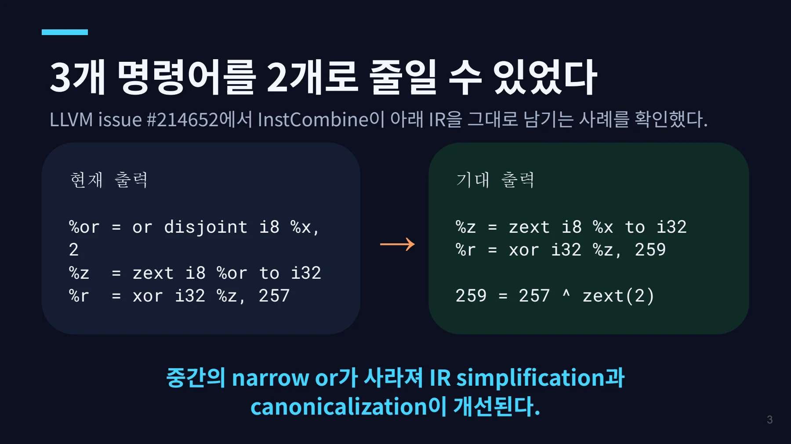
`or disjoint`가 안전성의 근거다 / 1. disjoint 조건: X & C₁ = 0 / 2. 비트가 겹치지 않으므로: X | C₁ = X ^ C₁
`or disjoint`가 안전성의 근거다
1. disjoint 조건: X & C₁ = 0
2. 비트가 겹치지 않으므로: X | C₁ = X ^ C₁
3. zext는 low-bit 관계를 보존:
zext(X | C₁) = zext(X) ^ zext(C₁)
4. XOR 결합법칙 적용:
xor(zext(or disjoint X,C₁),C₂)
= xor(zext X, C₂ ^ zext(C₁))일반 or에는 X & C₁ = 0이라는 보장이 없다. 따라서 같은 rewrite를 적용하면 값이 달라질 수 있다.
4
페이지 배치·기호·도식 확인하기

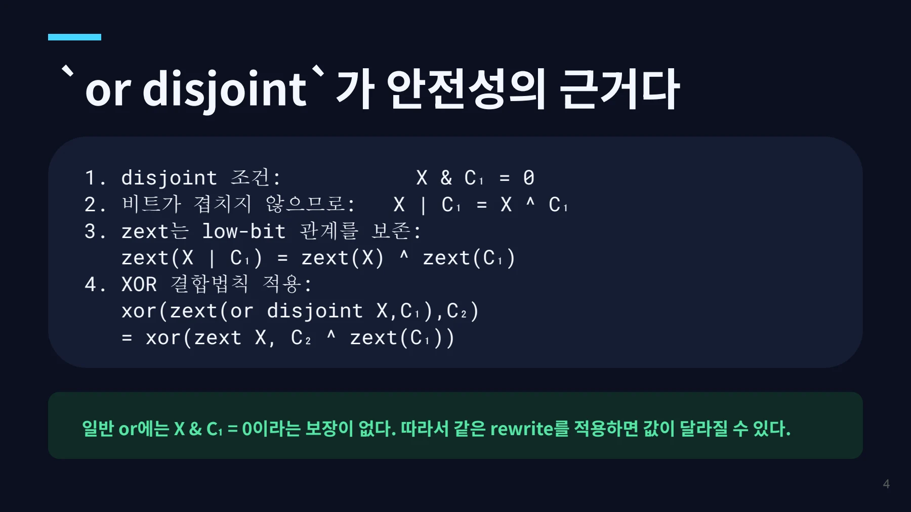
라벨보다 중요한 것은 결함의 위치였다 / 이슈 표기 리뷰 후 해석 / Type: Bug 이미 존재하는 cast reassociation이
라벨보다 중요한 것은 결함의 위치였다
이슈 표기
Type: Bug
Labels:• llvm:instcombine
• miscompilation
처음 해석 “새로운 instruction optimization을 추가하면 되는 missed fold”
리뷰 후 해석
이미 존재하는 cast reassociation이 의미상 XOR와 같은 or disjoint를 인식하지 못하고 있었다.
즉, 관찰된 증상은 missed optimization이지만 코드 관점에서는 기존 일반화 경로의 누락이었다.
※ 잘못된 코드를 생성한 사례가 아니라, 기존 최적화 경로가 놓친 구현 결함이라는 의미로 구분했다. 5
페이지 배치·기호·도식 확인하기

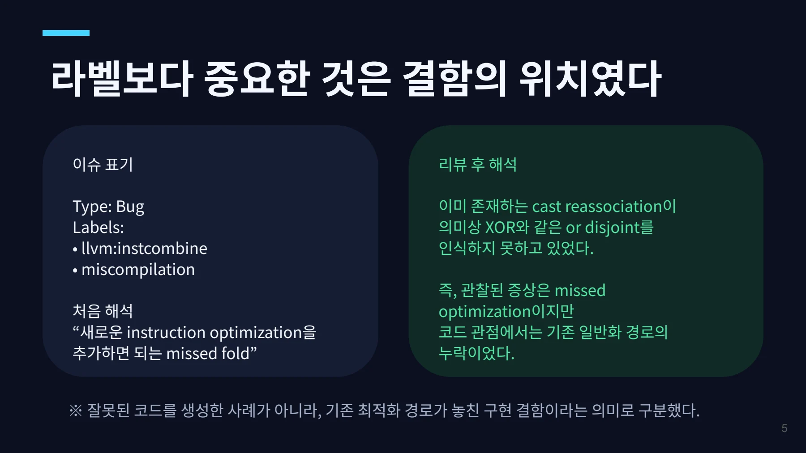
첫 패치는 `visitXor()`의 전용 fold였다 / 선택한 경계 / if (match(Op0,
첫 패치는 `visitXor()`의 전용 fold였다
if (match(Op0,
m_ZExt(
m_DisjointOr(X, C1))))
{
NewC = C2 ^ zext(C1);
return xor(zext(X), NewC);
}선택한 경계
• outer opcode는 xor
• 상수 피연산자
• zext와 inner op는 one-use
• 처음에는 scalar 중심
검증 순서
precommit CHECK → RED 확인
→ 구현 → CHECK 갱신 → GREEN
→ Alive2 proof
장점은 작은 diff였다. 단점은 같은 의미의 패턴을 공통 최적화 경로와 별도로 처리한다는 점이었다. 6
페이지 배치·기호·도식 확인하기

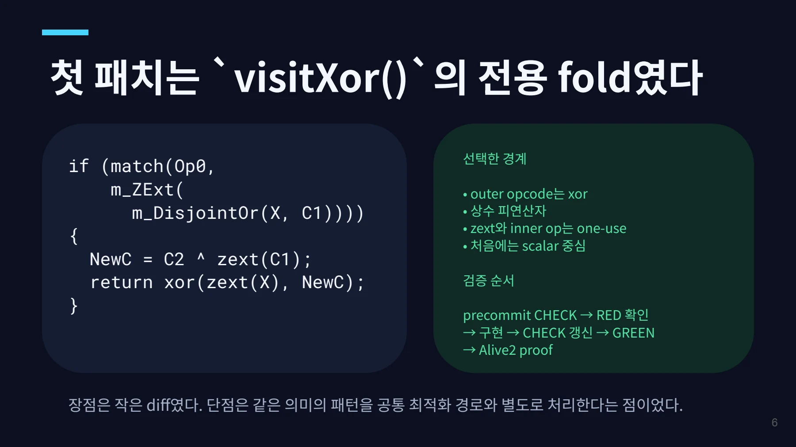
리뷰는 기존 reassociation 경로를 가리켰다 / “Please handle this pattern in simplifyAssocCastAssoc. / We can always treat o
리뷰는 기존 reassociation 경로를 가리켰다
“Please handle this pattern in simplifyAssocCastAssoc. We can always treat or disjoint as an xor.” — dtcxzyw
왜 이 위치인가?
기존 helper는 이미 (X op C₁)를 cast한 뒤 바깥에서 같은 op C₂를 적용하는 형태를 재결합한다.
문제는 opcode가 문자 그대로 같을 때만 통과했다는 점이다. defined input의 or disjoint는 XOR처럼 다룰 수 있으므로, 이 의미적 동등성을 helper에 알려주면 기존 상수 folding과 cast 처리 흐름을 그대로 재사용할 수 있다.
7 visitXor의 새 패턴 → 기존 simplifyAssocCastAssoc의 인식 범위 확장
페이지 배치·기호·도식 확인하기

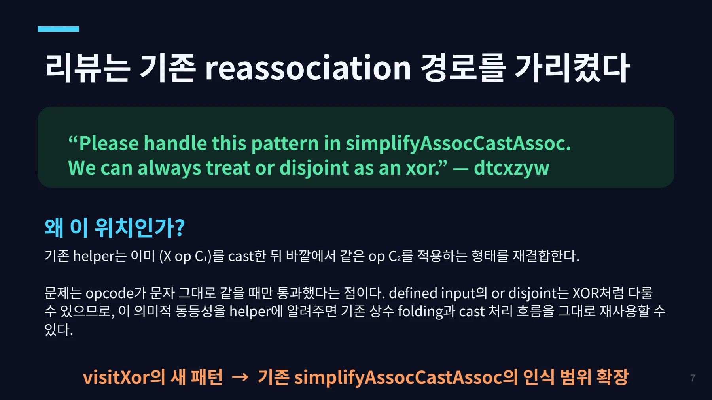
`nneg` 보존 여부는 방향에 따라 다르다 / zext nneg의 입력이 signed negative이면 결과는 poison이다. 따라서 flag를 무조건 복사할 수 없다. / 안전: inner
`nneg` 보존 여부는 방향에 따라 다르다
zext nneg의 입력이 signed negative이면 결과는 poison이다. 따라서 flag를 무조건 복사할 수 없다.
안전: inner OR 제거zext nneg (X | C)
↓
zext nneg XX | C의 sign bit가 0이면OR가 비트를 지울 수 없으므로
X의 sign bit도 반드시 0이다.불안전: inner XOR 제거zext nneg (X ^ C)
↓
zext XXOR는 sign bit를 끌 수 있다.
X ^ C가 non-negative여도
X가 non-negative인지는 모른다.최종 구현: inner op가 OR일 때만 기존 Cast의 nneg를 다시 설정한다.
8
페이지 배치·기호·도식 확인하기

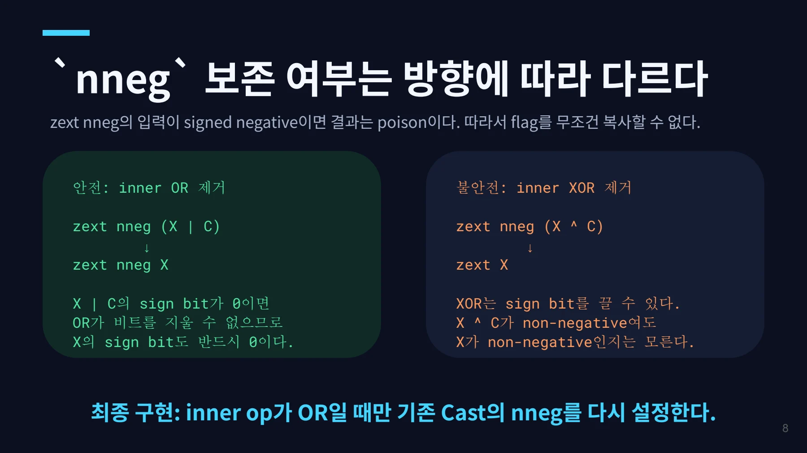
반대 방향이 또 다른 특수 처리를 만들었다 / or disjoint(zext(xor X,C₁),C₂) / → xor(zext X, C₂ ^ zext(C₁))
반대 방향이 또 다른 특수 처리를 만들었다
or disjoint(zext(xor X,C₁),C₂)
→ xor(zext X, C₂ ^ zext(C₁))1 리뷰에서 대칭적인 reverse variant도 같은 PR에 포함하자는 의견이 나왔다.
2 기존 helper는 bool을 반환하고 outer instruction을 제자리 수정했다. outer or disjoint를 xor로 바꿔야 했기 때문에 처음에는 foldDisjointOr()에 별도 구현했다.
3 리뷰어는 “올바른 AssocOpcode를 고르고 항상 새 instruction을 생성하라”고 제안했다. 이 변경으로 두 방향을 한 helper에서 처리할 수 있게 됐다.
두 번째 특수 케이스가 생긴 순간, 공통 추상화를 고치는 편이 더 작고 일관된 해결책이 됐다. 9
페이지 배치·기호·도식 확인하기

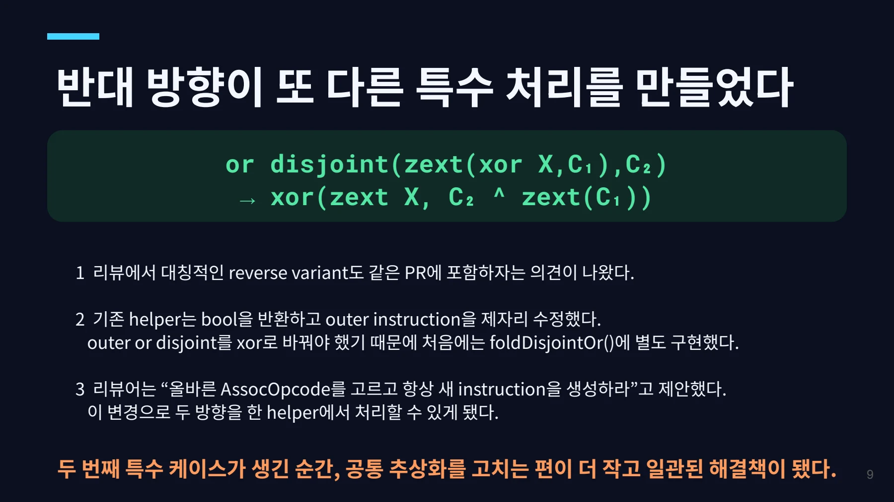
최종 코드는 한 helper에서 두 방향을 처리한다 / AssocOpcode = outer opcode 최종 구조의 의미 / if (inner opcode != outer opcode):
최종 코드는 한 helper에서 두 방향을 처리한다
AssocOpcode = outer opcodeif (inner opcode != outer opcode):
accept only mixed
xor / or disjoint
AssocOpcode = xorFoldedC = fold(C₁, C₂)
PreserveNonNeg =
cast.nneg && inner is orNew = CreateBinOp(
AssocOpcode, Cast, FoldedC)
replace outer uses with New최종 구조의 의미
• literal opcode 비교를 semantic 비교로 확장
• mixed case의 canonical opcode는 xor
• outer를 제자리 수정하지 않고 새 instruction
생성
• 기존 상수 folding·cast 재결합 로직 재사용
• visitXor / foldDisjointOr 전용 구현 제거
변경 파일 InstructionCombining.cpp
root cause를 공통 helper 한 곳에서 고쳐 두 변형이 같은 경로를 사용한다. 10
페이지 배치·기호·도식 확인하기

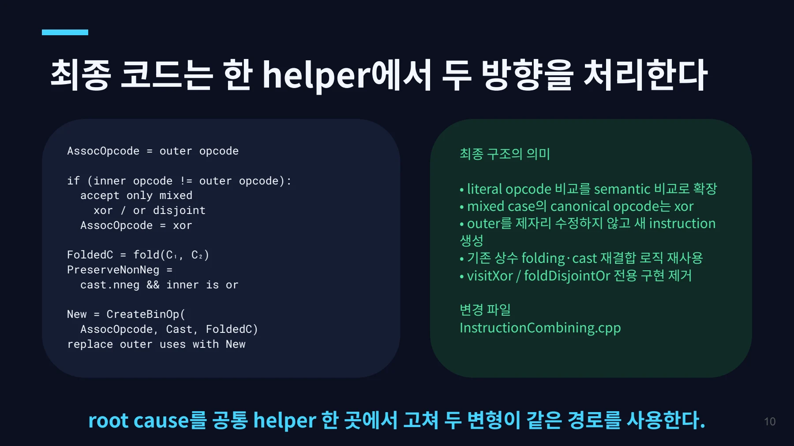
테스트가 최적화의 적용 경계를 고정했다 / 최적화되어야 하는 경우 최적화하면 안 되는 경우 / ✗ plain or
테스트가 최적화의 적용 경계를 고정했다
최적화되어야 하는 경우
✓ 원래 xor 방향
✓ reverse or disjoint 방향
✓ i8→i32, i32→i64
✓ scalar와 splat vector
✓ 상수 결합 결과
✓ inner OR에서 nneg 보존
최적화하면 안 되는 경우
✗ plain or ✗ zext가 multi-use ✗ inner op가 multi-use ✗ inner XOR의 nneg 자동 이전
검증
• or.ll / xor.ll FileCheck
• InstCombine 1,854 tests PASS
• clang-format 및 diff --check
positive test는 기능을 증명하고, negative·poison test는 최적화의 안전 경계를 문서화한다. 11
페이지 배치·기호·도식 확인하기

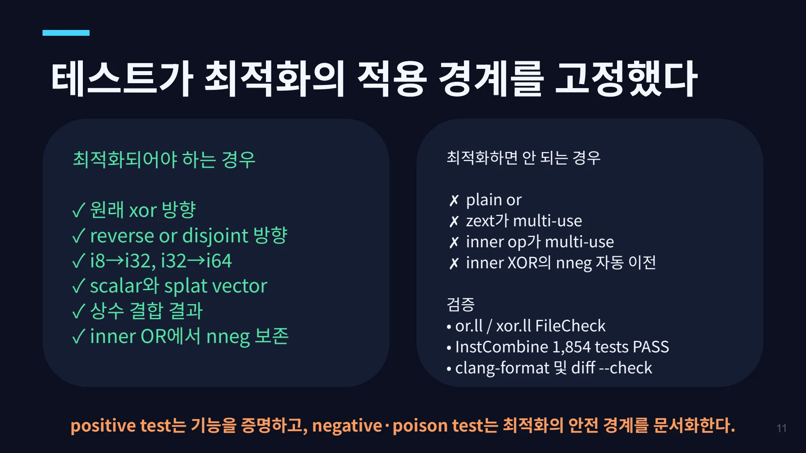
리뷰는 문제 정의와 코드 구조를 함께 바꿨다 / ① visitXor 전용 fold / → ② simplifyAssocCastAssoc로 이동
리뷰는 문제 정의와 코드 구조를 함께 바꿨다
① visitXor 전용 fold
→ ② simplifyAssocCastAssoc로 이동
→ ③ nneg 방향성 반영
→ ④ reverse variant 추가
→ ⑤ 항상 새 instruction을 만드는 공통 경로로 일반화
→ ⑥ 테스트 보완 후 LGTM · APPROVED
최종 상태
PR #214970 · OPEN dtcxzyw: APPROVED andjo403: “looks good to me” 변경: 코드 1개 + 테스트 2개 파일
얻은 교훈
작은 패턴부터 재현한다. 테스트로 경계를 먼저 고정한다. 리뷰가 가리키는 기존 추상화를 읽는다. 특수 케이스가 늘면 root cause를 고친다.
12
페이지 배치·기호·도식 확인하기

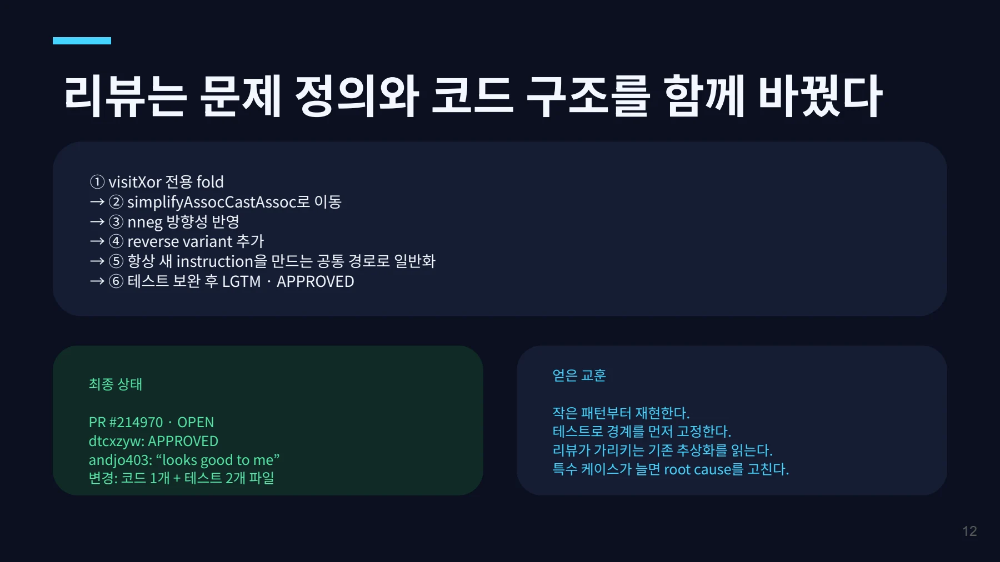
핵심 원리와 편집 주석
or disjoint의 성질
or disjoint는 두 입력의 1비트가 겹치지 않는다는 조건을 갖는다. 정의된 입력에서는 OR와 XOR의 결과가 같다.
X & C = 0인 범위에서
X | C = X ^ C이 성질을 사용하면 zext 안팎의 상수 연산을 기존 reassociation 경로로 처리할 수 있다.
전용 fold에서 공통 helper로
첫 구현은 visitXor의 전용 matcher였다. 리뷰는 기존 simplifyAssocCastAssoc에서 처리하도록 방향을 바꾸었다.
핵심은 새로운 특수 규칙을 두 방향으로 늘리지 않는 것이다. 기존 OR·XOR 재결합의 공통 구조에 disjoint 조건을 연결한다.
nneg 보존은 방향에 따라 다르다
zext nneg의 입력이 음수이면 결과가 poison이다. 연산을 안팎으로 옮기면 그 전제도 달라질 수 있다.
안쪽 OR를 제거하는 방향과 안쪽 XOR를 제거하는 방향은 같은 플래그 복사 규칙으로 처리할 수 없다. 부호 비트가 바뀔 수 있는지 각각 확인해야 한다.
- plain OR에는 disjoint 성질을 가정하지 않는다.
- 필요한 one-use 조건을 유지한다.
- 부호 비트가 걸린 상수와 vector 상수를 확인한다.
- 안팎의 opcode가 다른 두 방향을 모두 테스트한다.
리뷰가 바꾼 결과
자료는 missed fold에서 출발해 공통 helper의 재사용, 두 방향의 처리, 플래그 안전성으로 범위를 다듬은 과정을 기록한다.
문서 전문과 버전
- PDFPDF 원자료 · 12쪽LLVM_InstCombine_or_disjoint_zext_.pdf
각 자료는 별도의 버전입니다. 같은 주제라도 구현 상태·설명 범위·수치가 다를 수 있습니다.
관련 이슈와 PR
구현·병합 상태와 측정값은 해당 제출 자료의 작성 시점 기준입니다.